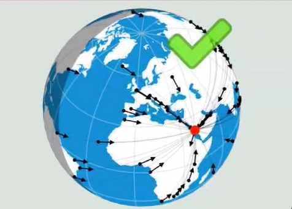
قبله یعنی جهت مستقیم به کعبه که نزدیک ترین مسیر روی سطح زمین به سمت کعبه میشه قبله
به طور مثال از تهران تا کعبه در جهت قبله حدود 1944 کیلومتره اما اگر 180 درجه بچرخی و برعکس قبله بری تا کعبه 38 هزار کیلومتره که تقریبا دور کامل زمین رو باید طی کنی تا به کعبه برسی
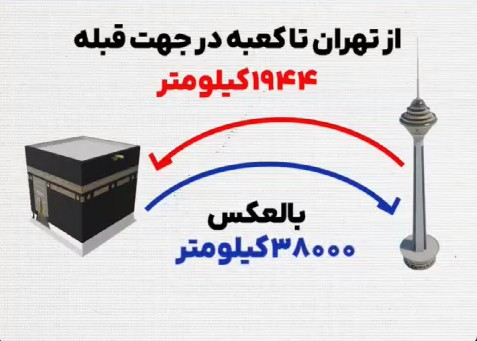
پس این پشت به قبله نمیشه چون قبله کوتاه ترین مسیر تا کعبه است
اما به قول شما نقطه انتیپاز کعبه یعنی نقطه مقابل اون تقریبا در اقیانوس آرام جنوبی قرار داره بین نیوزیلند و شیلی جاییکه چند جزیره کوچیک خالی از سکنه وجود داره که در اون جزایر فاصله تا کعبه از هر جهت یکسانه که تقریبا 20 هزار کیلومتره
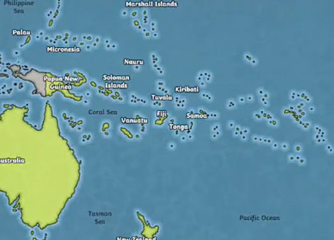
اگه مسلمونا تو این جزیره باشن به هر سمتی که توافق کنن میتونن نماز بخونن
چون قبله نمادی از وحدت و اتحاد میان تمام مسلمانان جهانه همه از هر نقطه روی زمین در یک جهت مشترک به سمت کعبه قرار می گیرن
کعبه به عنوان نقطه اشتراک این اتحاد عمل میکنه و هدف از نماز خوندن به سمت کعبه ایجاد همبستگی در عبادته
در اسلام اگر کسی جهت دقیق قبله رو ندونه چه روی زمین باشه چه روی کره ماه یا هر جای این جهان هستی که باشه میتونه به هر جهتی که بنظرش درسته نماز بخونه و نمازش هم درسته
در دنیای ریاضیات عدد شگفت انگیز به نام فی یا نسبت طلایی وجود داره که مقدار تقریبی اون 1.618
کپلر منجم و ریاضیدان برجسته آلمانی در سال 1619 میلادی در کتاب هارمونی های جهان میگه :
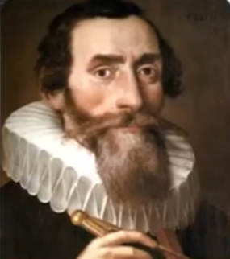
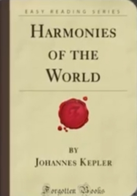
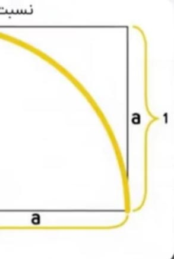
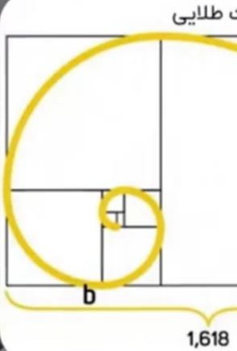
نسبت طلایی یکی از گنجینه های بزرگ هندسه است که در ساختارهای طبیعی ، موسیقی و کیهان حضور داره و نمادی از نظم و زیبایی الاهیه
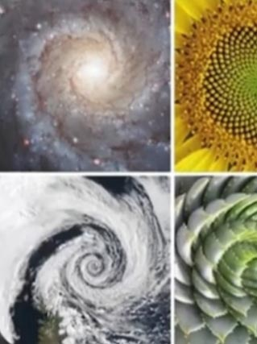
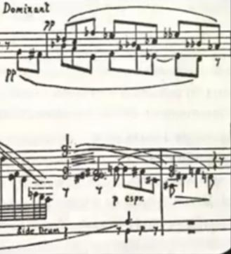
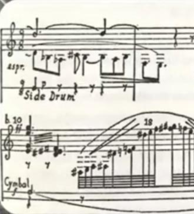
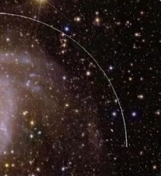
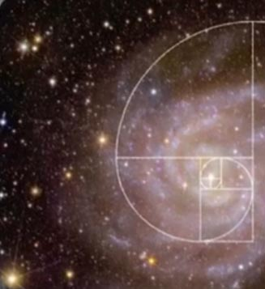
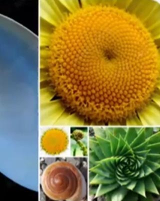
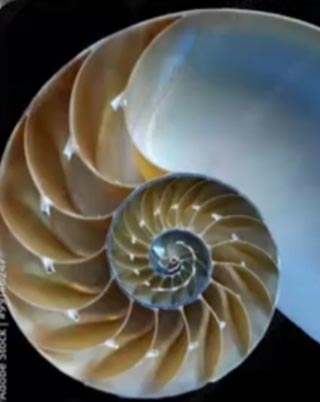
ماریو لیوو اخترفیزیکدان آمریکایی میگه :
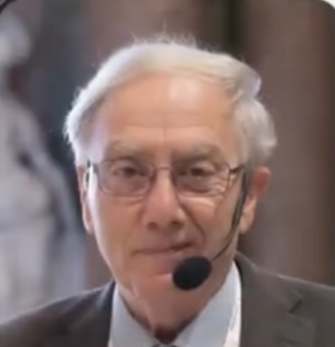
عدد طلایی نه تنها در هنر و معماری
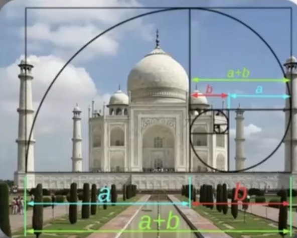
بلکه در طبیعت
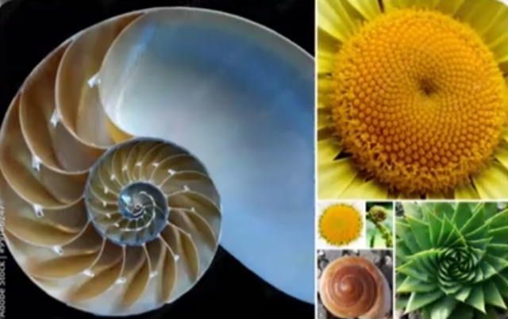
دی ان ای
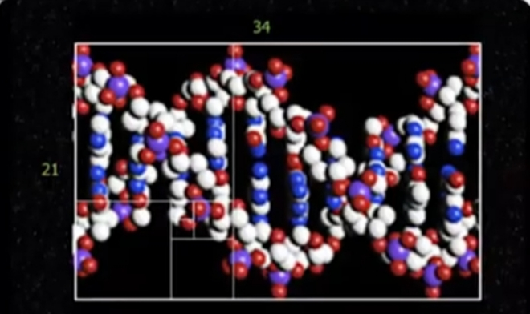
کهکشان ها
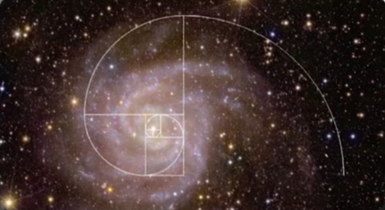
و حتی موسیقی
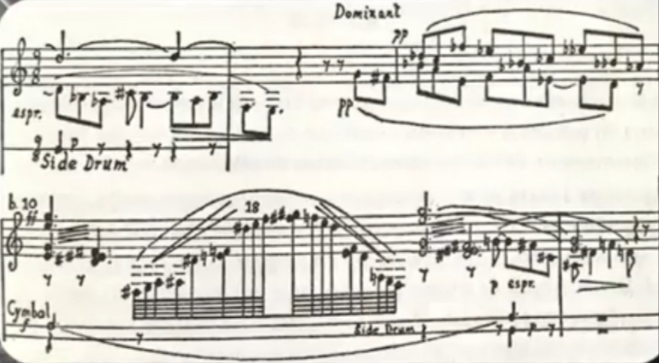
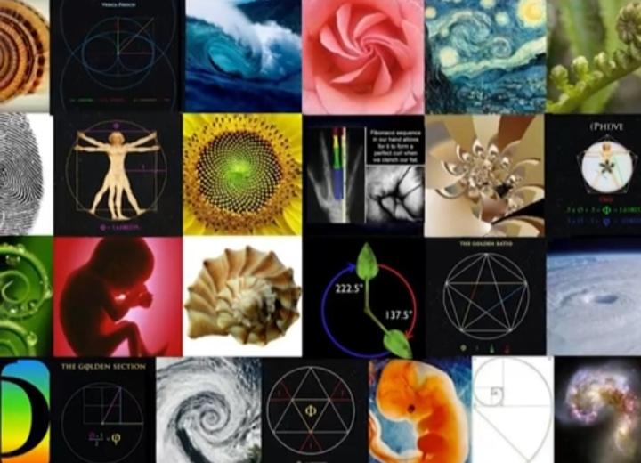
دیده میشه این نسبت پلی میان ریاضیات طبیعت و زیباییه
و اما نکته قابل تامل اینجاست که فاصله مکه تا قطب شمال 7,631 کیلومتر
و فاصله مکه تا قطب جنوب 12,348 کیلومتره
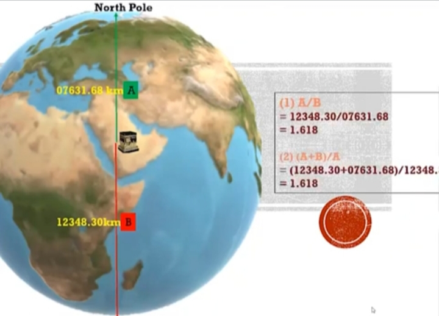
که نسبت این دو عدد به هم برابر با 1.618 یعنی دقیقا همون نسبت طلاییه
وقتی این دو نسبت در جایگاه مکان مقدسی همچون کعبه دیده میشه این سوال به وجود میاد
که آیا این به طور تصادفی اتفاق افتاده ؟ یا اینکه نشانگر تدبیر الاهیه
وعجیب تر اینکه در آیه 96 سوره آل عمران برای اولین بار در قرآن که از مکه یاد میشه
و خداوند اون را به عنوان مکانی مبارک معرفی میکنه
این آیه شامل 47 حرفه و از اول آیه تا کلمه مکه 29 حرفه
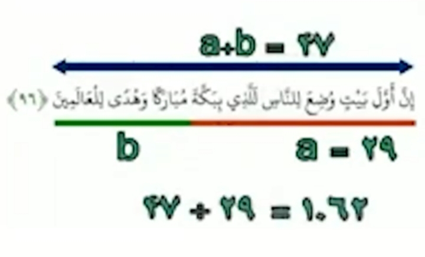
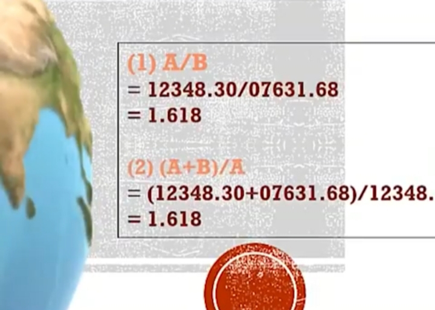
وقتی این دو عدد را بر هم تقسیم کنیم عدد 1.62 به دست میاد بازم نسبت طلایی
این دقیقا همون عددیه که در نسبت قطب ها تا مکه در نقشه جهانی بدست اومد اگر حتی یک حرف بیشتر یا کمتر بوداین نسبت طلایی به دست نمی اومد
همه این موارد اینو میرسونه که چنین نظم دقیقی نمیتونه تصادفی باشه و خالق زمین و ریاضیات یکیست
همون خدایی که کعبه را مکانی مقدس قرار داد